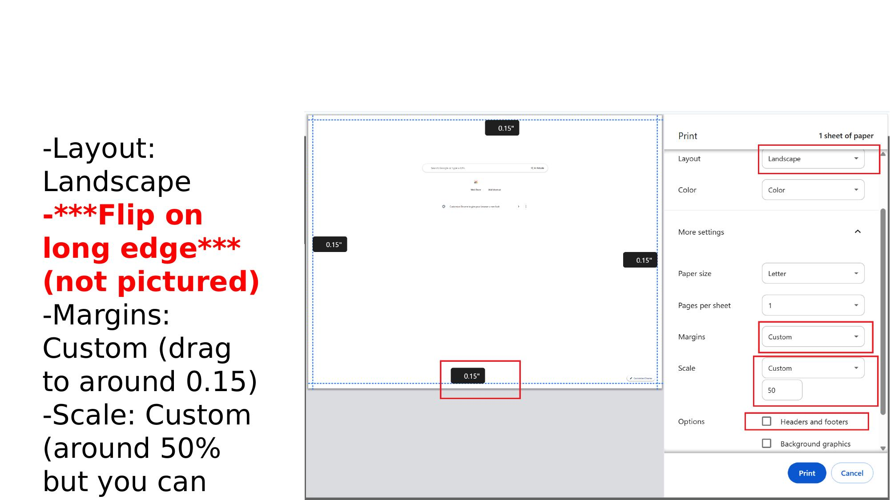
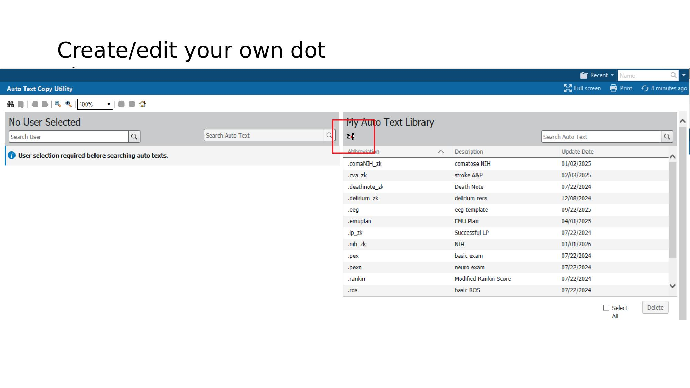
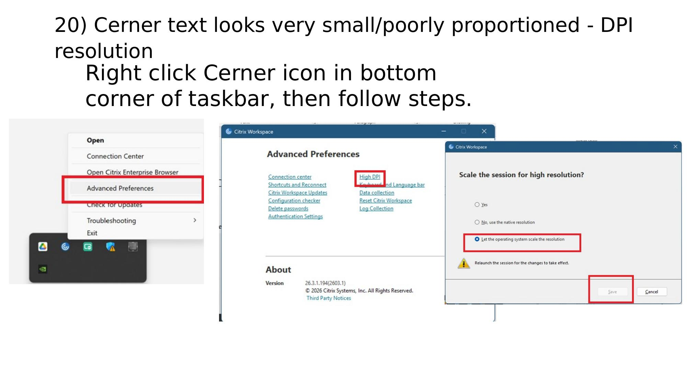
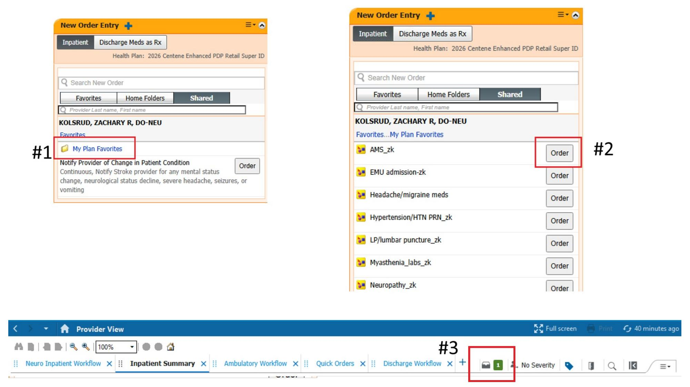
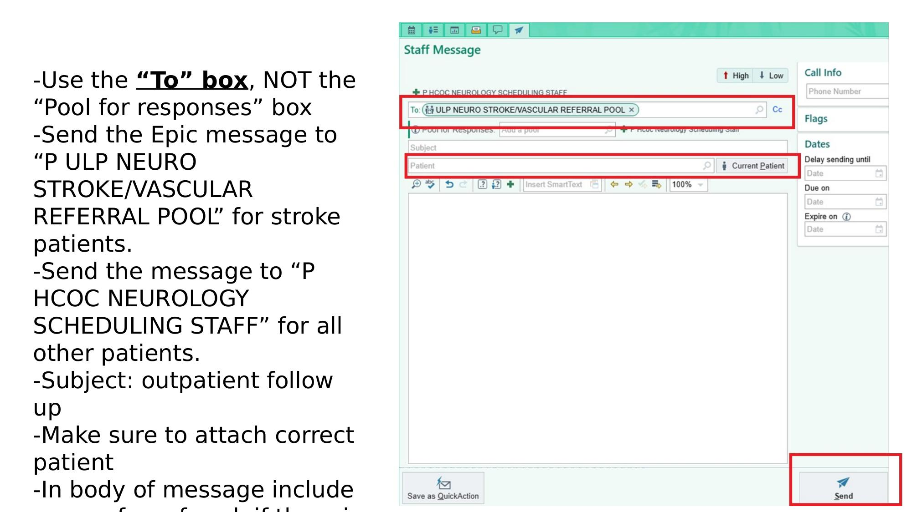

Workflow & EHR
Tips & Tricks
Cerner, Epic, and general workflow tricks residents have figured out the hard way. Jump to a section from the sidebar, or scroll.
Jewish phone transfer
- Create 2 new contacts in your phone (works on iPhone, unconfirmed on Android). Where you see
*, substitute your own 10-digit phone number including area code. - Jewish Routines:
5025889024,85221762176#,72#,1**********#,1 - Jewish Stat:
5025889024,58478227353#,72#,1**********#,1 - Someone can also forward you the contact directly and you can edit it from there.
Jewish Hypercoagulable panel
The hypercoag panel is ordered often in stroke patients, and exists as a premade order set — but only inside a ULH encounter, not Jewish.
- Open a ULH encounter for any patient and start ordering the hypercoag panel (don't actually initiate it).
- "Save as my favorite" the same way as the order-copying trick below.
- Once saved as your own favorite plan, you can order it on Jewish patients too.
How to print the list from SharePoint
- Print from Classic view, not normal view — normal view uses page frames that don't print correctly and patients often get left off the printout. (This is why people add a dummy "xxxxxxxxxxxxxx" patient at the end of the list — as a canary for this exact problem.)
Recommended print dialog settings

- Layout: Landscape
- Flip on long edge (not shown in the screenshot above, but important)
- Margins: Custom, drag to around 0.15"
- Scale: Custom, around 50% (decrease further to fit the list on fewer pages)
- Uncheck Headers and footers
Cerner patient lists
- Only give other people "Maintain" access to your lists — otherwise rotators can accidentally delete your list when they go off service.
- Required lists: General neurology, Stroke Census, Jewish stroke, Jewish general, EMU, PFO LIST NEW
- Helpful lists: ULH ED, ULH Master, Real Jewish ER, Jewish master list
- You should already have access to these — if not, ask another resident currently on service.
Making patient lists
Move lists from Available lists to Active lists in Cerner's list manager — ask a co-resident to walk you through it once if the UI isn't obvious; it's much faster shown than described.
Have my labs been drawn?
Cerner can show you whether ordered labs have actually been collected yet — useful for not repeatedly asking nursing. Doesn't work as well for routine daily scheduled labs.
Dot phrases
Dot phrases are reusable text snippets — build your own or copy someone else's.
My Auto Text Library

- If you don't see the dot phrase tool right away, check a dropdown — everyone's Cerner layout is a little different.
- You can create or edit your own dot phrases directly, or copy someone else's into your own library.
Cerner note filters
- In a patient's chart, open the Documentation tab on the left — there's a dropdown of Default filters (e.g. "All Physician Notes" shows only H&Ps, progress notes, ED notes, procedure notes, filtering out case management, PT/OT/speech, etc).
- Advanced filters live in the same area, and let you build your own.
- Prior EEGs: expand ClinicalDoc → Documents and Reports → Clinic Notes → check Neuro Diagnostics → Save.
- EKGs: ClinicalDoc → Documents and Reports → check Cardiac.
- Therapy notes: ClinicalDoc → Documents and Reports → Powerform Textual Rendition Notes → check "Occupational Therapy Forms — Text," "Physical Therapy Forms — Text," and "Speech Therapy Forms — Text."
Small vs. large document view
In the Documentation tab, drag the Preview slider left or right to change how document titles display — worth trying both to see which is easier to scan for you.
Cerner text looks tiny/poorly proportioned (DPI resolution)
Fixing the Citrix DPI scaling issue

- Right-click the Cerner icon in the bottom corner of the taskbar.
- Choose Advanced Preferences → High DPI.
- Select "Let the operating system scale the resolution" → Save → relaunch the session for it to take effect.
Cerner session cleanup
Getting repeatedly kicked out of your Cerner session usually means two people are trying to use the same session at once — either you left your account logged in on another computer, or someone else's account is still logged in where you're sitting.
- If you know where you left your account logged in, go log it out there.
- If you don't know where, force logout from everywhere via the icon on uapps.uoflhealth.org.
Order sets — copying from another resident
Copying a shared order plan

- Open any patient chart.
- Click Provider View.
- Click the Inpatient Summary tab.
- Under New Order Entry, click the Shared tab and enter the name of the resident whose orders you want to duplicate.
Your exact layout may look slightly different depending on your Cerner configuration.
Add back items omitted from an order set
If an order set is missing an item you expected, there's usually a way to add it back in rather than ordering it separately — worth exploring the order set's edit/customize option before assuming it's not available.
CareEverywhere — outside hospital records
CareEverywhere pulls in a patient's records from an outside hospital. Won't work for every hospital — Baptist and Norton generally work well, but the VA only shows limited info.
RAD PACS / PowerShare
Many patients arrive with neuro imaging already done elsewhere — worth pulling for comparison and to avoid repeat imaging.
- Call the outside hospital and ask for Radiology (sometimes a phone menu option, sometimes through the operator).
- Ask them to PowerShare the images to UofL Downtown.
- After a few minutes, the images are viewable directly through RAD PACS. Some computers have it on the desktop; others need to go through Uapps.
Recreating sagittal/coronal images from axial-only studies
Head CTs often only include an axial view, but sagittal and coronal views can be genuinely useful.
- Click the "3D" button to generate them.
- Use the thin-slice study for the highest-quality reconstruction.
- Works for MRI too, not just CTH — though thin CTH slices give the best quality result.
Duplicate charts
Registration sometimes accidentally creates a second account/chart for a patient who's already been seen. If a patient or family mentions a prior visit but you can't find past charts, search by name + date of birth to check for this.
- You can add both registrations to your patient list in the meantime.
- To flag charts for merging, email the MRNs to ulhmpi@uoflhealth.org — merges have to wait until the patient is discharged.
Calling Access Center for incoming transfers
Patients often get accepted for transfer with only partial information passed to residents. Access Center can usually fill in the gaps — even with just a partial name or "neurology is involved."
- Phone: 502-562-8008 (same number used for Code LVO, works for both hospitals).
- Sometimes transfers even get cancelled after being accepted — worth checking if one seems to be taking too long.
Outpatient scheduling via Epic message
Residents can't schedule an exact appointment date directly — instead, message scheduling staff to call the patient. This is required for every stroke or TIA patient at sign-off or discharge, no exceptions. Relying on Cerner's built-in follow-up leaves it to the patient to call in on their own; sending an Epic message gets staff to call the patient directly. For general neurology patients it's technically optional if you're confident the patient will call, but best practice is to send the message either way.
Staff Message routing

- Use the "To" box, not "Pool for responses."
- Stroke patients: send to "P ULP NEURO STROKE/VASCULAR REFERRAL POOL"
- All other patients: send to "P HCOC NEUROLOGY SCHEDULING STAFF"
- Subject: "outpatient follow up"
- Attach the correct patient, and include reason for referral, a specific provider if applicable, and a rough timeframe in the message body.
Outpatient note template
Start every note from a premade template rather than blank — several exist and residents use different ones. Find them under My SmartPhrases. You can type any user's name to browse their SmartPhrases, then right-click one and choose "Add to My SmartPhrases" if you like it. ImprovedNeuroResNote is one commonly used template.
Outpatient note speed buttons
With an active encounter open, the fastest way to start a note is the Speed Buttons in the Notes tab — clicking the ImprovedNeuroResNote button inserts that template directly. Edit your own speed buttons via the "…" menu → My Notes Settings.
Outpatient note macros
In NoteWriter, macros instantly re-enter a previously chosen combination of selections — e.g. a normal physical exam. Create one via the dropdown arrow next to the pencil icon, then trigger those same selections again later with one click.
A nearby button also lets you copy forward a previously documented physical exam, and another copies forward an entire previous note.
Expanded outpatient order options
Epic has additional outpatient order options beyond what shows by default — worth exploring if you're not seeing an order type you expect.
PowerChart and Epic on your phone
- Cerner/PowerChart: download "PowerChartTouch" and "Cerner Message Center" (iPhone app names).
- Epic: download "Haiku" (iPhone app name).
- Call IT for access — they'll email instructions and an access code.
- Alternatively, log in at servicedesk.uoflhealth.org/servicePortal with your Epic login and submit a request: "Epic" → "Epic – Haiku/Canto…" or "Cerner" → "PowerChart Touch Mobile Install."
ePrescribing in Cerner
- Go to servicedesk.uoflhealth.org/servicePortal.
- Log in with your UofL Health email (or Epic login ID) and Epic password.
- Select Cerner → Cerner EPCS → fill out the form.
Access to Epic e-prescribing and mobile app installs are available on the same site, in different sections.
Dax Copilot
PGY2 and above can request Dax Copilot access for AI-assisted note writing. Log in to Self-Service (same steps as ePrescribing above), then navigate to "Epic" → "Epic – Dax Copilot" to request it.
DataArk
DataArk holds old records from before Epic was implemented (roughly 2019 and earlier). If you see a "Legacy encounter" while chart-checking, the details are often in DataArk. Log in with your Epic login — if you don't have access, submit a general IT support ticket requesting it.
ULH Stroke workroom badge access
There's no door code for the Stroke workroom — badge access is required. PGY1/PGY2 residents should already have it; if not, it can be requested. Access can also be requested for rotators and medical students so they don't have to knock every time.
To request: email kyle.sams@uoflhealth.org with a list of names and Cerner login IDs.
Maintenance & IT work orders
For urgent IT issues, calling IT directly is usually faster. For non-urgent issues (a few days' wait is fine), work orders for both IT and building/equipment maintenance can be submitted at uoflhealthnow.org/resources.
FirstNet ED board
FirstNet lets you view the Emergency Department board across different hospitals — useful for tracking incoming or boarding patients without calling each ED individually.
Frazier ITW charting
Patients admitted at Frazier have their PM&R progress notes and PT/OT/SLP notes in a separate charting system from the main EHR — worth checking there specifically if you can't find therapy documentation where you'd expect.